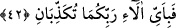

42. Öyleyken Rabbinizin hangi nimetlerini yalanlayabilirsiniz?
Öğütlerden ve sakındırmalarından ki her biri bir nimettir.
43. İşte bu, suçluların yalanladıkları cehennemdir.
Yâni onları azarlamak ve başlarına kakmak için bu söz söylenir.
44. Onlar, cehennemle kaynar su arasında dolaşır dururlar.
Yâni, cehennem ateşi arasında döner dururlar ve onunla yakılırlar. “Hamîm”,
“sıcaklığı en yüksek derecesine ulaşmış, mücrimlerin üzerine dökülen veya onlara
içirilen kaynar sudur.” Şaşkınlık ve susuzluktan Cehennem ateşinden kaynar suya, kaynar
sudan cehennem ateşine sürekli olarak döner dururlar.
“Ân” kelimesi, “sıcaklığın ve buharlaşmanın son derecesine ulaşan çok sıcak kaynar
suya” denir.
Ebu’l-Leys demiştir ki; onlar aç bırakılırlar. Yemişleri şeytan başı gibi olan zakkum
ağacına getirilirler. Ondan yediklerinde boğazlarından yakalayıverir ve tıkanır kalırlar.
Hemen kurtulmak için su isterler, onlara kaynamış su getirilir. Suyu yüzlerine
yaklaştırdıklarında yüzlerinin etleri lime lime dökülür. Çaresiz kaynar suyu içtiklerinde
içleri kaynayıp ne varsa dışlarına çıkar. Onlara yine açlık musallat edilir. Onlar da bir
kaynar suya, bir de zakkûm ağacına götürülür dururlar.
Ka’bu’l-Ahbâr demiştir ki; cehennem vâdîlerinden bir vâdîye getirilirler. Burası,
burada bulunanlardan akan kanla karışık sıvıların biriktiği bir yerdir. Boyunlarındaki
esâret halkaları içinde o kan ve irin içine dalarlar ve bütün uzuvları dökülür. Oradan da
çıkarılırlar, Allah onlara yeni bir vücud verir ve cehenneme atılırlar.
45. Şimdi Rabbinizin nimetlerinden hangisini yalanlayabilirsiniz?